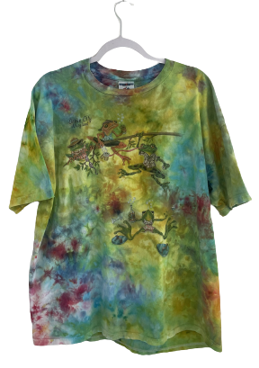

DATE OF DISCOVERY: OCTOBER 25, 2148
PLACE OF DISCOVERY: TOMPKINS SQUARE PARK
ORIGIN: OCEAN CITY, MARYLAND
DESCRIPTION: MULTICOLOR TIE DYE FROGS
MATERIAL: 100% COTTON
PRODUCED IN: UNITED STATES
COLORS: PINK, ORANGE, YELLOW, GREEN, BLUE
SIZE: LARGE
Front side features four clothed frogs hanging from tree holding drinks. Back side has no printed design. Entire shirt is tie dyed in pink, orange, yellow, green, and blue.